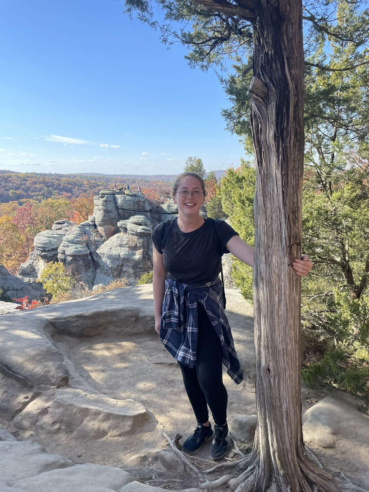

As an aspiring UX Designer, I plan to spend each day learning more about how I can create products
that will exceed users’ expectations and create a positive experience for anyone who chooses to use that
product. I want to create experiences that benefit users and stakeholders alike, with priority on accessible
design.
In my personal life, a lot of my plans revolve around my main goal of travelling the world. I want
to meet and learn from people who come from all walks of life. I’d love to try new foods and listen to new music
during my travels as well as learn how to do new things. For example, how cool would it be to dance on roller
skates? One day, I’m going to do it. (In as many places as possible, of course).

Want to Connect?
Projects
Mobile Mental Health Application Design
Formulated a solution for IU students regarding access to mental health resources. We
created a digital prototype application called “Let’s Talk” through thorough primary and secondary
research methods.
Designed a dashboard application using Java that keeps track of
products inventory, customer information, order information, and allows employees to make
changes to that information as needed.
Oversaw a group of 4 in the redesign of a local nonprofit website.
I led the team in learning WordPress, sitemapping,
wireframing, and many other methods in the creation of our final website redesign.